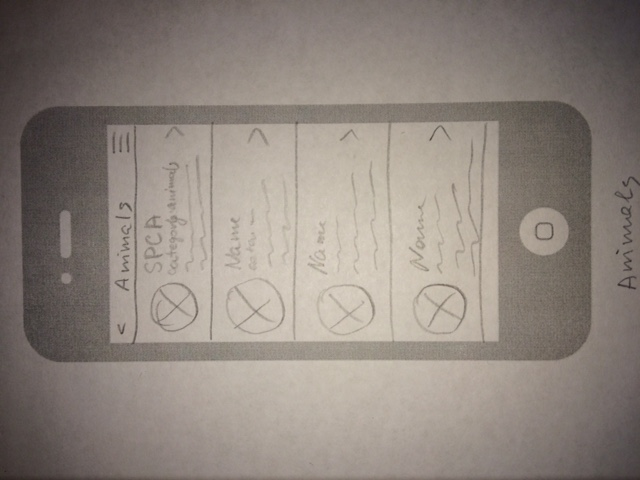
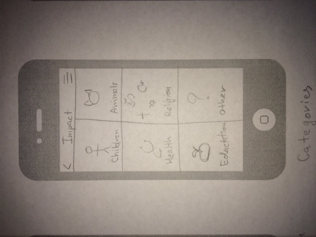
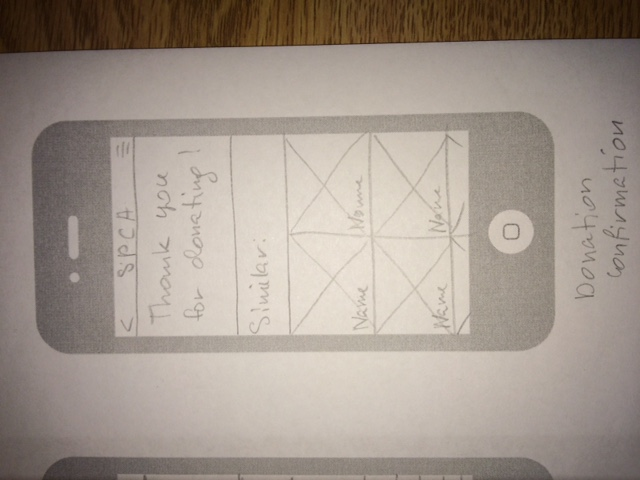
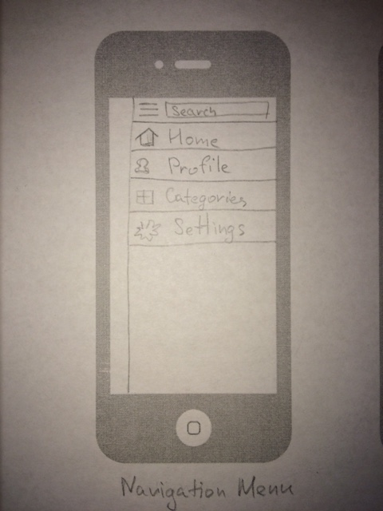
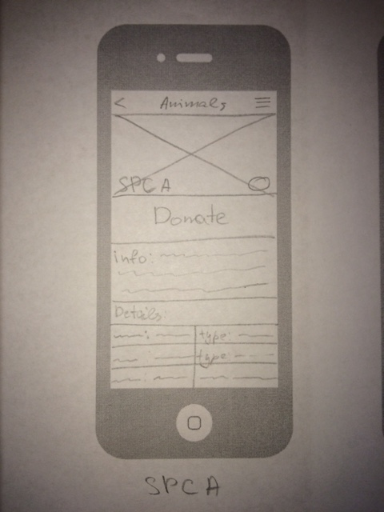
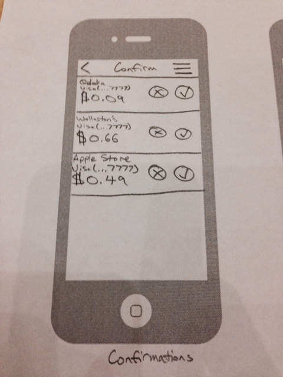
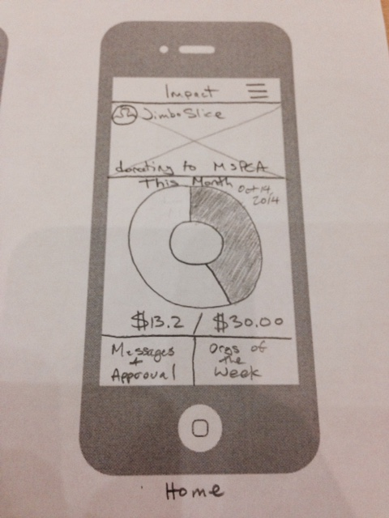
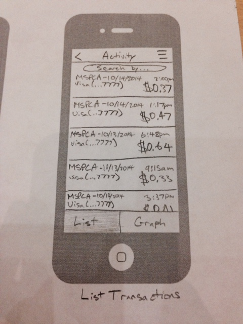
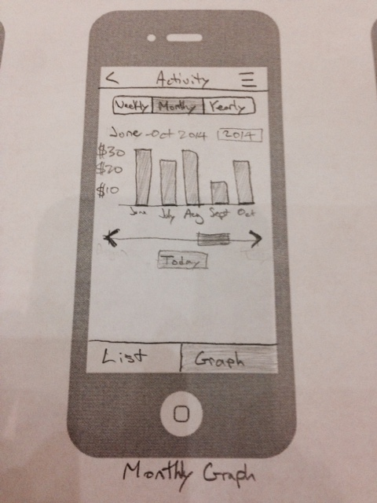
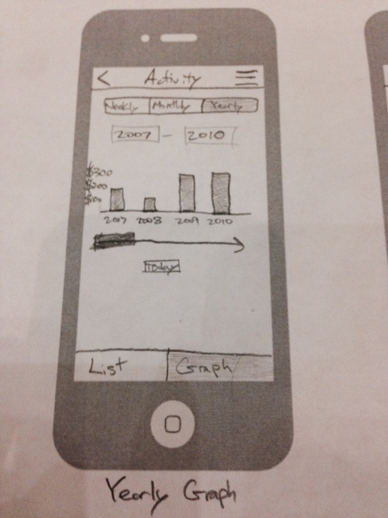

Charity Search Design: PUT DESCRIPTIONS OF EACH SKETCH NEXT TO THEM HERE





Donation Design:
Isaac works in Human Resources for a technology company and has done a lot of volunteer work. He loves helping people at any opportunity he gets, and is very knowledgeable about many charity and non-profit organizations. He wants to get more people involved in donating to these organizations, and also to find a way to make donating easy. He knows that people have their computers that they can use to donate through the internet, but he also knows that there are a lot of steps involved in getting to the donation page, along with a number of distractions that may deter people. Since he works at a technology company, and happens to be an Apple fan, he is very aware of the newest application releases for iOS.
Isaac discovers the Impact app and encourages his coworkers to start using it. He knows that with the built in automatic donation feature, he can rally more support for the organizations he supports, while getting people involved in a way that is unobtrusive to their daily lives. Isaac also knows that some of his coworkers are control freaks, and that they will not like the automatic donation option. He decides to show them how easy it is to use Impact to make small contributions. Since Isaac has already been using the app, he already has his payment options set up, so he decides to give his coworkers a quick rundown of what a donation would look like. So, Isaac takes them to their regular lunch spot, which is a sandwich shop where they get subs to-go. After Isaac purchased his favorite Italian sub, he pulled out his phone and launched the app. He shows his coworkers that the first thing they will see, after making a purchase and opening the app, is a prompt asking if the donation is ok. Isaac also points out how small the amount is that he is about to donate. After selecting the “Accept” button, he is given a “Thank you for donating!” message to tell him that payment worked.

Donation Catalogue Design:
Home Page – This is the main homepage for users where they can view the current organization they are donating to, their current progress for their monthly goals (depicted in pie chart percentage form), have access to their manual donation approvals, see organizations of the week, and (scrolling down) view their recent donations.

List Transactions – This is the list view for recent donations from the user. The user can scroll down to view recent donations in chronological order. The user also has the ability to search for a transaction, however at this moment we are not sure about how extensive we want this search to be.

Monthly Graph – This is the monthly graph view of past donations. Users can visually see their past monthly totals compared to other months, and when they have reached their goals. The user also has the ability to slide left and right through time to view a certain scope of months.

Yearly Graph – Same as the monthly graph, but in year form.

Charity Search Activity Scenario: Jimbo wants to start donating to the organization his friend told him about. He picks up his phone and opens Impact app. He clicks on a search icon and enters the name of the local shelter “Animal Rescue League of Boston”. The list of different organizations with similar name appears on the screen. He picks the first one, since it was the one he was searching for. On the profile page of the Animal Rescue League he sees a button with “Donate” on it. He clicks on it and adds the organization to the donation list. App gives him a confirmation and a list of suggested charities based on the one he already added. One of those catches his eye, so he clicks on it to check out their profile. Jimbo notices the icon for non-kill shelter in the details section and he immediately decides to add this organization to his list as well.
Donation Activity Scenario:
Isaac works in Human Resources for a technology company and has done a lot of volunteer work. He loves helping people at any opportunity he gets, and is very knowledgeable about many charity and non-profit organizations. He wants to get more people involved in donating to these organizations, and also to find a way to make donating easy. He knows that people have their computers that they can use to donate through the internet, but he also knows that there are a lot of steps involved in getting to the donation page, along with a number of distractions that may deter people. Since he works at a technology company, and happens to be an Apple fan, he is very aware of the newest application releases for iOS.
Isaac discovers the Impact app and encourages his coworkers to start using it. He knows that with the built in automatic donation feature, he can rally more support for the organizations he supports, while getting people involved in a way that is unobtrusive to their daily lives. Isaac also knows that some of his coworkers are control freaks, and that they will not like the automatic donation option. He decides to show them how easy it is to use Impact to make small contributions. Since Isaac has already been using the app, he already has his payment options set up, so he decides to give his coworkers a quick rundown of what a donation would look like. So, Isaac takes them to their regular lunch spot, which is a sandwich shop where they get subs to-go. After Isaac purchased his favorite Italian sub, he pulled out his phone and launched the app. He shows his coworkers that the first thing they will see, after making a purchase and opening the app, is a prompt asking if the donation is ok. Isaac also points out how small the amount is that he is about to donate. After selecting the “Accept” button, he is given a “Thank you for donating!” message to tell him that payment worked.
Donation Catalogue Activity Scenario: Jimbo Slice has donated a number of times in the past to multiple organizations including The Red Cross and the MSPCA. When he turned 18 and obtained his own debit card, he began using the Impact app to donate small amounts with each transaction of his debit card. At the budding age of 23, Jimbo has decided to look back into his past to discover exactly how much he has contributed throughout his early life. He would love to see the difference he has made over time using simple small donations.
In addition, Jimbo wants to examine exactly how much he is donating each week and month to ensure that he can afford it and cut down if necessary. Upon opening the Impact app, Jimbo taps on the circular month’s progress to open up his recent transactions.
Immediately he is shown his recent individual donations for the transactions he has been making with his card, in chronological order.
He then taps on the “Graphs” button. The screen now shows his past monthly donation total in graph form.
By tapping on the “Yearly” icon, Jimbo is able to see how much he has been donating over the past few years.
Having discovered that these numbers are within his budget, he decides to close the app and continue passively donating.